Chung
-
Làm thế nào khi quên tài khoản, mật khẩu?
Hãy liên hệ bộ phận hỗ trợ khách hàng qua Zalo, Số điện thoại?
Tham gia nhóm Zalo hỗ trợ KĐCLGD: https://zalo.me/g/amvusf088
-
Làm thế nào để thay đổi mật khẩu?
Để thay đổi mật khẩu thì người dùng thao tác như sau:
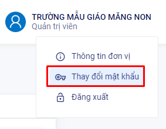Bước 1: Bấm vào biểu tượng tên người dùng. Chọn Thay đổi mật khẩu

Bước 2: Nhập mật khẩu cũ. Mật khẩu mới. Xác nhận mật khẩu mới. Bấm nút Lưu lại
-
Kiểm định chất lượng nhà trường gồm mấy khâu? Đó là những khâu nào? Khâu nào quan trọng nhất? Khâu nào nhà trường phải làm?
KĐCL nhà trường gồm 4 khâu, đó là:
1. Tự đánh giá của nhà trường.
2. Đăng ký KĐCLGD/ đăng ký đánh giá ngoài và đăng ký công nhận đạt tiêu chuẩn chất lượng giáo dục.
3. Đánh giá ngoài.
4. Công nhận nhà trường đạt tiêu chuẩn chất lượng giáo dục và cấp giấy chứng nhận kiểm định chất lượng giáo dục.
Trong đó, khâu Tự đánh giá là khâu quan trọng nhất và là nhiệm vụ nhà trường phải làm thường xuyên liên tục.
-
Vì sao có dấu chấm thang màu đỏ khi tải tệp lên? Cách sửa như thế nào?
Nguyên nhân: Tệp tin đang tải lên có dữ liệu chưa đúng định dạng.
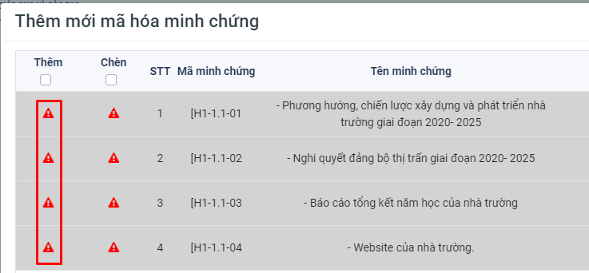Cách sửa:
1. Rê chuột vào vị trí dấu chấm thang màu đỏ để xem chi tiết thông báo lỗi. (Như hình là Lỗi Mã minh chứng không đúng định dạng).
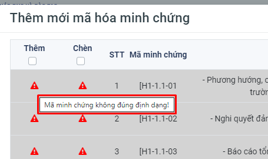2. Tùy vào nội dung mà hệ thống sẽ có thông báo tương ứng.
3. Chỉnh sửa lại nội dung bị sai định dạng.
4. Tải lại tệp tin lên hệ thống.
Cơ sở dữ liệu nhà trường
-
Vì sao không cập nhật được số liệu hoặc đồng bộ trong Thông tin lớp học?
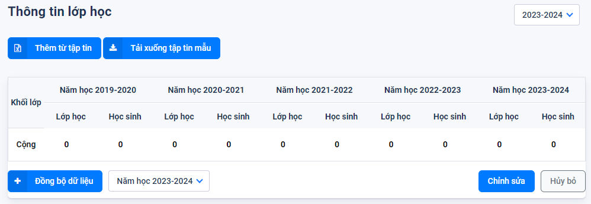
Nguyên nhân: Do trong năm học mới, đơn vị Trường chưa thực hiện thêm các khối lớp. Để cập nhật được thông tin lớp học trong năm học mới, thì đơn vị phải khai báo các khối lớp tương ứng.
Bước 1: Vào cơ sở dữ liệu nhà trường. Chọn Quản lý Khối học
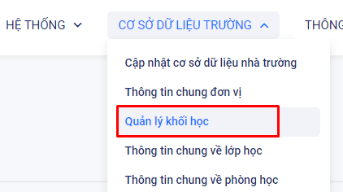Bước 2: Nhấn nút Thêm mới
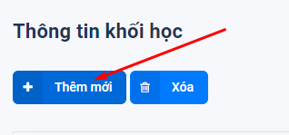Bước 3: Chọn Khối lớp. Nhấn nút Thêm mới để thêm

👈 Sau khi thực hiện xong 3 bước trên thì người dùng có thể cập nhật số liệu hoặc đồng bộ dữ liệu Thông tin lớp học
-
Khi cập nhật cơ sở dữ liệu nhà trường cần chú ý những điểm gì?
Trả lời:
- Điền đầy đủ các thông tin số liệu vào biểu mẫu. Số liệu đảm bảo tuyệt đối chính xác.
- Những ô nào không có dữ liệu ghi rõ là “0”
- Các cột tổng số hàng ngang, hàng dọc phải chính xác.
- Số liệu thời điểm tự đánh gia thường lấy số liệu học kỳ I (vì hàng năm nhà trường hoàn thiện tự đánh giá vào tháng 3)
- Các số liệu trong báo cáo phải đồng nhất, tránh mâu thuẩn, sai lệch.
- Cách ghi dạng số thập phân phải theo qui định.
- Đảm bảo giữ nguyên biểu mẫu, không xoá bỏ cột, dòng.
Thông tin tự đánh giá
-
Thế nào là tự đánh giá (TĐG) chất lượng giáo dục?
Tự đánh giá là hoạt động tự xem xét, kiểm tra, đánh giá của trường theo bộ tiêu chuẩn đánh giá chất lượng giáo dục của Bộ GD&ĐT.
Tự đánh giá là khâu đầu tiên trong quy trình kiểm định chất lượng giáo dục Đây là quá trình nhà trường tự xem xét, kiểm tra, đánh giá trên cơ sở các tiêu chuẩn đánh giá chất lượng giáo dục của Bộ Giáo dục và Đào tạo để báo cáo về tình trạng chất lượng, hiệu quả giáo dục, nhân lực, cơ sở vật chất cũng như các vấn đề liên quan khác, từ đó điều chỉnh các nguồn lực và quá trình thực hiện nhằm đáp ứng các tiêu chuẩn chất lượng giáo dục.
Tự đánh giá thể hiện tính tự chủ và tự chịu trách nhiệm của nhà trường trong toàn bộ hoạt động giáo dục theo chức năng, nhiệm vụ được giao.
Tự đánh giá là một quá trình liên tục được thực hiện theo kế hoạch, cần dành nhiều công sức, thời gian, có sự tham gia của các đơn vị và cá nhân trong nhà trường. Tự đánh giá đòi hỏi tính khách quan, trung thực và công khai. Các giải thích, nhận định, kết luận đưa ra phải dựa trên các thông tin, minh chứng cụ thể, rõ ràng, tin cậy. Báo cáo tự đánh giá phải bao quát đầy đủ nội dung các chỉ số của tiêu chí trong tiêu chuẩn đánh giá chất lượng giáo dục.
-
Quy trình tự đánh giá nhà trường gồm mấy bước? Đó là những bước naò? Sản phẩm của mỗi bước là gì?
Gồm 6 bước đó là:
1. Thành lập Hội đồng tự đánh giá -> Kết quả được (QĐ thành lập HĐTĐG)
2. Xây dựng kế hoạch tự đánh giá, gồm 2 bước là: Xác định mục đích, phạm vi TĐG và xây dựng kế hoạch TĐG -> kết quả được (Kế hoạch TĐG).
3. Thu thập, xử lý và phân tích các thông tin, minh chứng -> Kết quả được (Bảng danh mục minh chứng).
4. Đánh giá mức độ đạt được theo từng tiêu chí ->(Phiếu đánh giá tiêu chí).
5. Viết báo cáo tự đánh giá -> Kết quả được (Báo cáo TĐG).
6. Công bố báo cáo tự đánh giá -> (Các ý kiến góp ý về báo cáo TĐG).
-
Vì sao không chỉnh sửa, cập nhật được thông tin tự đánh giá?
Nguyên nhân: Do đơn vị trường đã thực hiện thao tác Đăng ký đánh giá ngoài và hoàn thành tự đánh giá. Khi thực hiện đăng ký đánh giá ngoài thì đơn vị Trường sẽ không thể chỉnh sửa các nội dung Tự đánh giá được nữa.
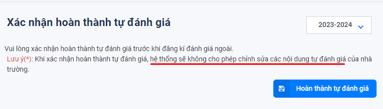Cách sửa:
Cách 1. Kiểm tra có thể Tiếp tục chỉnh sửa không. Vào mục Thông tin tự đánh giá. Chọn Đăng ký đánh giá ngoài. Bấm Tiếp tục Chỉnh sửa.
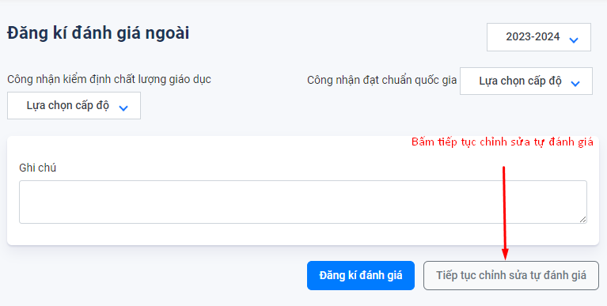Cách 2.Trường hợp không có nút Tiếp tục chỉnh sửa thì Gửi yêu cầu thu hồi dữ liệu và liên hệ Phòng/Sở giáo dục để Thu hồi dữ liệu đăng ký đánh giá ngoài. Sau khi thu hồi dữ liệu. Thao tác lại cách 1 để chỉnh sửa.
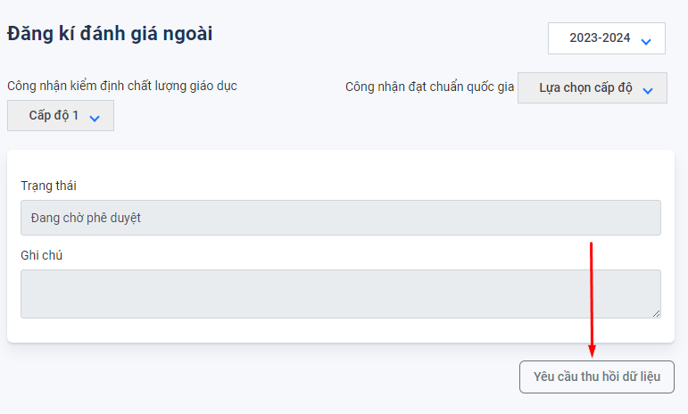Trường sẽ nhận được thông báo về việc thu hồi dữ liệu, sau khi Phòng GD thực hiện thu hồi dữ liệu.
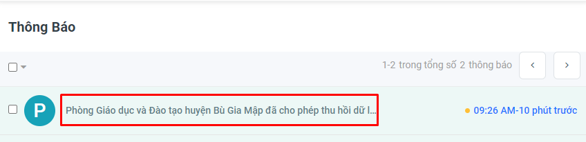Trường Vào mục Thông tin tự đánh giá. Chọn Đăng ký đánh giá ngoài. Bấm Tiếp tục Chỉnh sửa.
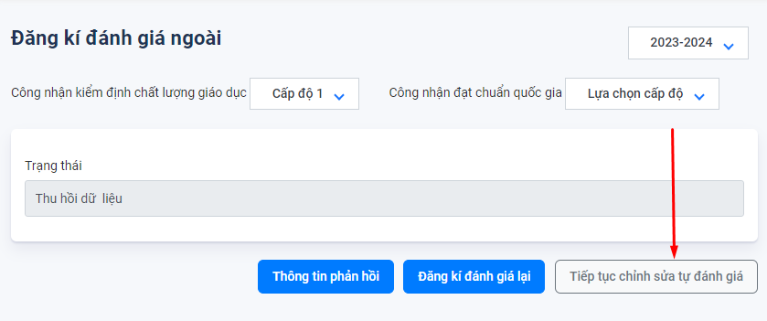 -
Vì sao không xóa được minh chứng trong phần danh mục mã hóa minh chứng?
Nguyên nhân: Do minh chứng đó đang được sử dụng trong phần tự đánh giá tiêu chuẩn tiêu chí.
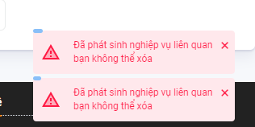Cách sửa:
Bước 1. Bấm vào nút Chi tiết ở minh chứng muốn xóa.
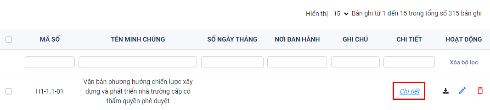Trong phần thông tin minh chứng. Xem 2 mục Tiêu chuẩn và tiêu chí. ==> Minh chứng này đang được dùng ở Tiêu chuẩn 1, Tiêu chí 1.1
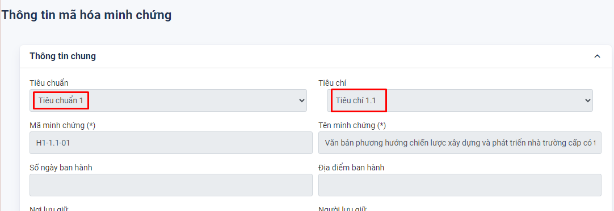Bước 2. Vào mục Thông tin tự đánh giá. Chọn Tự đánh giá tiêu chuẩn-tiêu chí. Tìm tới Tiêu chuẩn 1. Tiêu chí 1.1. Vào mục Minh chứng. Bấm nút Thêm minh chứng.
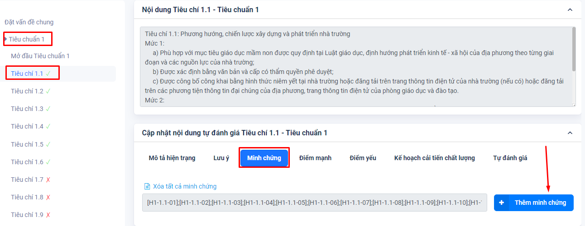Bước 3. Bỏ dấu tích chọn ở minh chứng cần xóa. Nhấn nút Lưu lai.
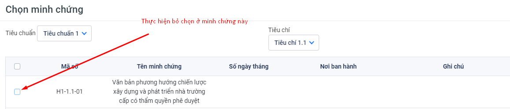Bước 4. Quay lại danh mục mã hóa minh chứng. Thực hiện xóa minh chứng.
Báo cáo thống kê
-
Không tải được file báo cáo, file thống kê?
nguyên nhân: Do đang sử dụng trình duyệt Edge chặn không cho tải về. Thầy cô đổi sang trình duyệt Firefox hoặc Cốc Cốc hoặc Chrome
-
Không xem được file báo cáo hoặc thống kê?
-
Nội dung báo cáo, thống kê bị lỗi ký tự?
Nguyên nhân: Do hệ thống cập nhật công cụ nhập liệu mới so với công cụ nhập dữ liệu trước đây.
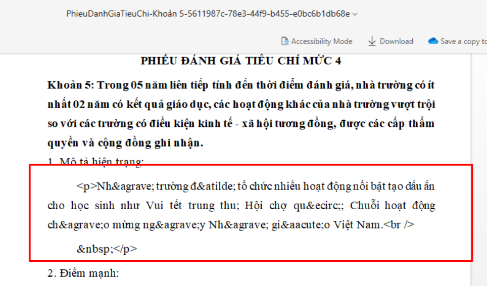Cách sửa: Hiện tại hệ thống đã tự động chỉnh sửa lỗi hiển thị ký tự.
-
Làm sao để kiểm tra tình hình đánh giá của Trường?
Để kiểm tra tự đánh giá thì Trường vào mục Báo cáo Thống kê. Chọn Thống kê kết quả tự đánh giá.
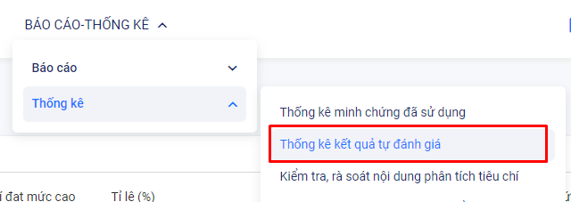Kiểm tra mục đã đánh giá. Nếu tiêu chí nào chưa có dấu tích thì chưa thực hiện. Trường tiến hành cập nhật, bổ sung dữ liệu cho tiêu chí đó.
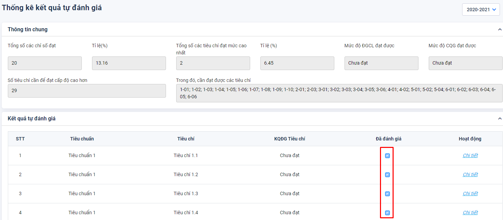